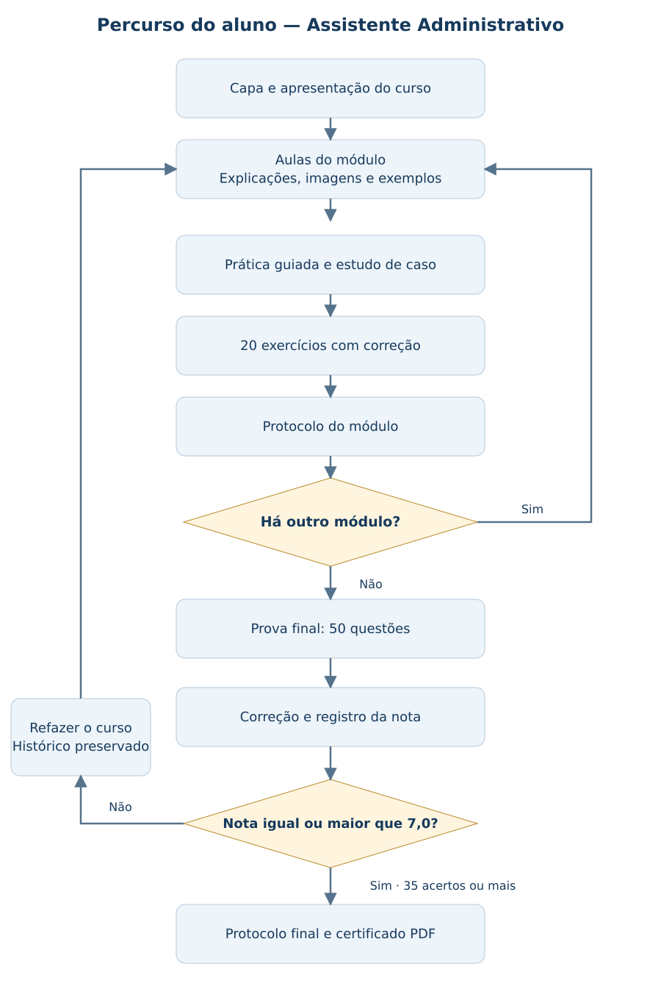

GESTÃO DE NEGÓCIOS · CURSO 01 · 40 HORAS
Assistente Administrativo
Área Administrativa
CONTEÚDO AUTORAL
Desenvolvido por Khassio Silva · Plataforma Reino
Grade curricular e metodologia
Objetivo do curso: preparar o aluno para apoiar as rotinas de um negócio como assistente administrativo, organizando informações, documentos, prazos, controles financeiros e comunicação.
Público: iniciantes na área administrativa, profissionais em atualização e pessoas que apoiam pequenos negócios. Requisito: leitura e escrita básicas e acesso a um dispositivo com internet.
| Módulo | Carga horária | Competência desenvolvida |
|---|---|---|
| 1. Administração e Planejamento de Negócios | 8h | Reconhecer as funções administrativas e apoiar o planejamento, metas e planos de ação de um negócio. |
| 2. Rotinas Administrativas e Ferramentas Digitais | 8h | Organizar agenda, documentos, registros, compras e planilhas com precisão e segurança. |
| 3. Gestão Financeira e Controle do Negócio | 8h | Apoiar o controle de receitas, despesas, pagamentos, recebimentos, caixa e orçamento. |
| 4. Pessoas, Comunicação e Atendimento | 7h | Comunicar-se com clareza, registrar atendimentos e colaborar com equipes de forma ética. |
| 5. Indicadores, Qualidade e Melhoria Contínua | 7h | Conferir registros, acompanhar indicadores e propor melhorias documentadas em processos administrativos. |
| Revisão e prova final | 2h | Revisar os conteúdos e resolver 50 questões. |
| Total | 40h | 25 aulas, 5 atividades práticas, 100 exercícios e prova final. |
Como você vai aprender
Em cada aula: explicação do assunto, imagem de referência, esquema de apoio, exemplo aplicado e exercício guiado. Ao final de cada módulo: atividade prática integradora e 20 questões com correção comentada e protocolo de conclusão.
Os exercícios dos módulos são formativos. Após concluir os cinco módulos, você fará a prova final de 50 questões. Com nota mínima 7,0 (35 acertos), poderá baixar o certificado. Se não alcançar a nota, iniciará um novo ciclo do curso para revisar e realizar novamente as atividades.
Organização das 40 horas: explicações, exemplos, atividades práticas, exercícios e revisão. A carga horária é um planejamento de estudo; não há contagem regressiva na prova.
Conteúdos dos módulos
Módulo 1 — Administração e Planejamento de Negócios
- As funções administrativas
- Cliente e proposta de valor
- Diagnóstico do negócio
- Metas e planos de ação
- Ética e apoio da inteligência artificial
Encerramento: atividade prática, 20 questões, correção comentada e protocolo.
Módulo 2 — Rotinas Administrativas e Ferramentas Digitais
- Prioridades e agenda
- Documentos e registros
- Planilhas aplicadas
- Compras e materiais
- Sistemas e automação
Encerramento: atividade prática, 20 questões, correção comentada e protocolo.
Módulo 3 — Gestão Financeira e Controle do Negócio
- Receitas, custos e despesas
- Contas e conciliação
- Fluxo de caixa e capital de giro
- Preço, margem e equilíbrio
- Orçamento e decisão
Encerramento: atividade prática, 20 questões, correção comentada e protocolo.
Módulo 4 — Pessoas, Comunicação e Atendimento
- Responsabilidades e delegação
- Comunicação clara e acessível
- Atendimento e reclamações
- Conflitos e cooperação
- Proteção de informações
Encerramento: atividade prática, 20 questões, correção comentada e protocolo.
Módulo 5 — Indicadores, Qualidade e Melhoria Contínua
- Processos e padrões
- Indicadores e metas
- Qualidade dos registros
- Causas e melhoria contínua
- Relatório e caso integrador
Encerramento: atividade prática, 20 questões, correção comentada e protocolo.
Carregando seu curso…
Seu percurso no curso
Conclua os cinco módulos antes da prova final. O certificado é liberado com pelo menos 35 acertos nas 50 questões.
Abrir fluxograma completo
Referências e organização
Curso autoral da Plataforma Reino. As fontes apoiam o estudo; não representam parceria ou certificação pelas instituições citadas.
As 40 horas correspondem ao planejamento de aulas, práticas, revisão e prova. Organize sua agenda para realizar todas as atividades.